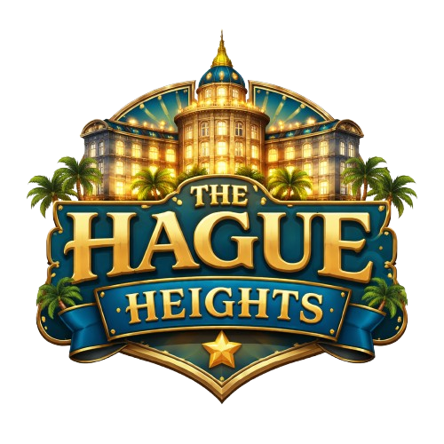
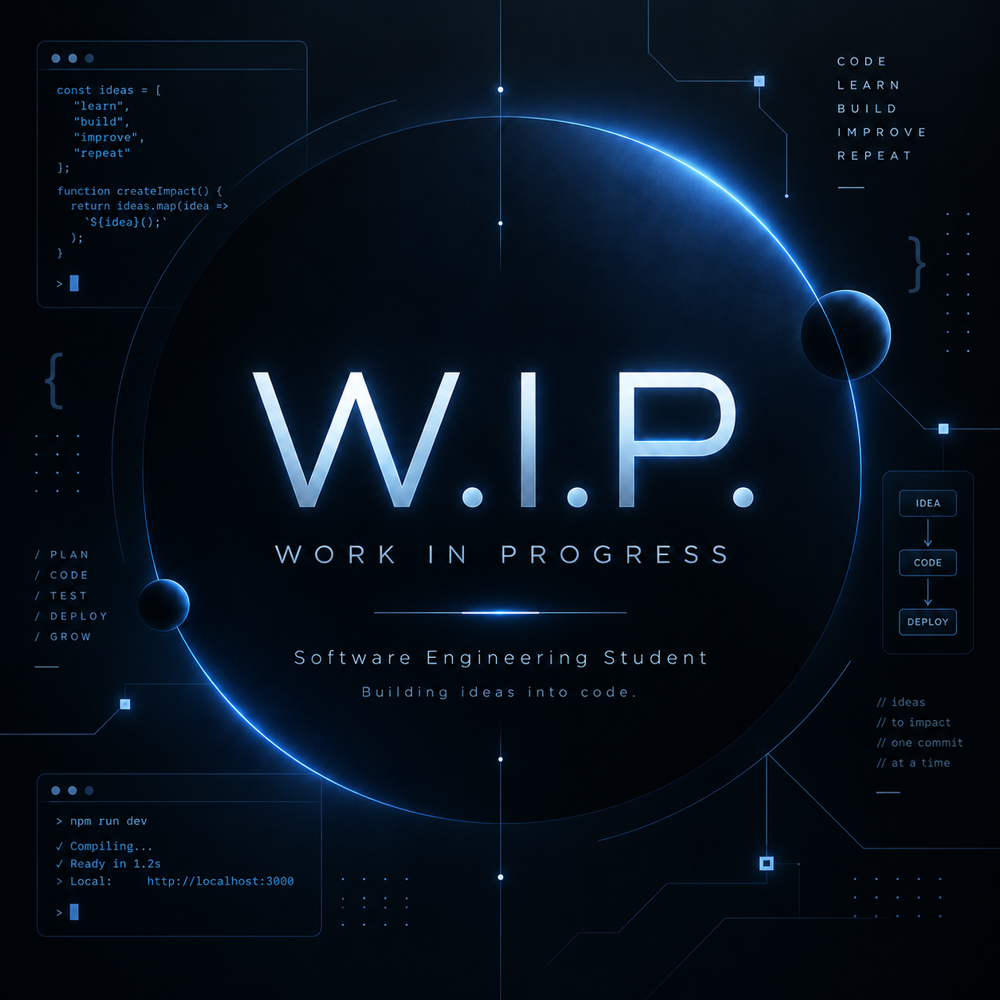

Webapplicatie · 2026
Klascompas
Een rustige digitale plek waar leerlingen en docenten overzicht houden op alles wat een schooldag vraagt.
02 / PROJECTEN
Een greep uit projecten waarin ik onderzoek, ontwerp en technologie samenbreng.
Webapplicatie · 2026
Een rustige digitale plek waar leerlingen en docenten overzicht houden op alles wat een schooldag vraagt.

De opdrachtOntwerp een oplossing die hulpvragen in de klas inzichtelijk maakt, zodat leerlingen niet onnodig hoeven te wachten en leraren hun aandacht eerlijker en efficiënter kunnen verdelen.
Mijn rol Onderzoek, interfaceontwerp, front-end en back-end development.
Open volledige case ↗Desktop app · 2026
Een simulatieomgeving voor het testen van verschillende hotel layouts en risicoscenario’s.

De opdracht Ontwerp een desktop applicatie die verschillende hotel layouts kan simuleren en scenario’s met risico’s inzichtelijk maakt.
Mijn rol Concept, interface-ontwerp en productdenken.
Open volledige case ↗W.I.P. · 2026
Er staat nog geen afgeronde case hier. Zodra een nieuwe opdracht beschikbaar is, verschijnt deze plek hier.

De opdracht Deze plek is tijdelijk gereserveerd voor een nieuwe case die binnenkort wordt toegevoegd.
Status Werk in uitvoering. Er komt hier later een nieuwe opdracht te staan.
Open W.I.P. pagina ↗